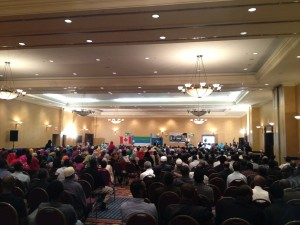

khatumo.net archive
Jubbaland community in Toronto celebrate the formation of their new provincial State in south central Somalia
By A. Hindi
June 2, 2013

Jubbaland event in Toronto June 2, 2013
 After years of grass-roots consultations from the ground up, After years of suffereing and hopelessness, More than 500 delegates respresenting all the communities that live in Lower Jubba, Middle Jubba and Gedo region have gathered in Kismayu University; democratically electing Ahmed Mohamed Islan (Ahmed Madobe) as their president and General Fartaag as their Vice president and commander in chief. Ladies and Gentlemen, Somalia is going through a new breeze of democratic movements throughout the region. On May 15, 2013, The people of of Lower Jubba, Middle Jubba and Gedo Region have united to form JUBBALND STATE OF SOMALIA. The Jubbaland provincial elections process was transparent and inclusive of all the communities; From Buale and Baardheere, Jilib and Jamaame and Goobwayn to Garbaharrey, the multicultural People of Jubbaland who have lived in harmony for centuries have decided to move forward.
After years of grass-roots consultations from the ground up, After years of suffereing and hopelessness, More than 500 delegates respresenting all the communities that live in Lower Jubba, Middle Jubba and Gedo region have gathered in Kismayu University; democratically electing Ahmed Mohamed Islan (Ahmed Madobe) as their president and General Fartaag as their Vice president and commander in chief. Ladies and Gentlemen, Somalia is going through a new breeze of democratic movements throughout the region. On May 15, 2013, The people of of Lower Jubba, Middle Jubba and Gedo Region have united to form JUBBALND STATE OF SOMALIA. The Jubbaland provincial elections process was transparent and inclusive of all the communities; From Buale and Baardheere, Jilib and Jamaame and Goobwayn to Garbaharrey, the multicultural People of Jubbaland who have lived in harmony for centuries have decided to move forward.
Having grown up and raised in Kismayu City, I remember my Quranic teacher Ma’allin Xareed, who taught me Alif, Ba, Tha. My first Somali Teacher Hassan Olow who taught me how to write proper Somali Stories, and my English Teachers: Xaji Abdi Yare and his famous English private school and later the legendary Mukhtar Ramadan Arbow at Clanaley Middle School. Finally, at Ganane High school, I was lucky to have had the privilidge of the best Science and Chemistry teacher in Jubbaland: Cabdi Samed Sh. Qasim who is here with us tonight.
Ladies and Gentelmen, as you may know, lately, our Federal Government has been sending delegation after delegation to Kismayu, somehow they say that they want to help and make peace in the state of Jubaland. Mr. President; How do you make peace in a city that is already peaceful. The people of Jubbaland are slowly retuning from refugee camps and re-building their lives. Instead of lifting them up and empowering the voices of democracy in south Central Somalia, Mr. president, your government said that they do not recognize the democratic efforts of the people of Jubaland.
A small reminder to our Feds who seem to forget that they have been elected with a mandate to empower democratic regional administrations, construct roads and bridges that connect all the states of Somalia; Grom Saylac to Raaskaambooni. To build hospitals and schools so we can provide basic services to our people. To establish security and justice systems so we can live in peace. See we need to Build the sugar factory of Mareereey, develop our Marine resources; fish and Meat factories. This Jubaland province can adequately feed all of Somalia. Just ask anyone who passed through this region during the difficult and dark days of civil war. We need to reverse this and chart a new political and economic course for our people. We need to change our political language to an economic language.
Moreover, It seems that adherence to the our Constitution has been lacklustre at best. Somali constitution is not a textbook that can be modified or changed until it produces the results one likes. We need to learn from Mature democracies like that of of the United States or Kenya. For example, despite the extreme gun voilence in the U.S., President Obama understood the limitation of his office when he accepted the US constitution’s second amemdment which calls for the right of citizens to bear arms. On the other hand, President Uhuru of Kenya understood the imitations of his office when he respected the rights of his MPs who voted to raise their salaries to 10K per month; an outrageous inequality in his country. These presidents clearly understand the limitations of their power. Mr. President , my President Hassan Sheikh, I have a question for you: I was wondering Mr. President, Do You Have any Limitations !!! You have personalized the presidency and You have turned Somalia into a One Man Show.
Additionally, Over the past 3 years, Kenyan soldiers have contributed to keeping the peace and increasing capacity of Somalis to stand on their feet. We know that your government has recently put forth a motion asking Kenyan army to withdraw from Kismayu. Mr. president will you also ask the Amisom forces in Mogadishu including your own driver and bodyguards to withdraw from Somalia.
The people of Somalia including jubbaland are grateful to the international and Amisom support including Kenyan forces who have lost thousands of lives. Somalia will never go back to the dark days of powerlessness and Radicalization of its innocent citizens. by creating doubt about the legitimacy of the Jubaland leadership, Mr. President, your government seems to be dividing the people of Jubaland along tribal lines. We understand that Inclusivity and transparency is very important for you Mr. president as you allege that the Jubbaland elections were not transparent and inclusive. Mr. President where was your inclusivity and transparency when you secretly met the Hargaisa administration in Turkey; ignoring all the other communities in North Somalia including Khatumo, Makhir and Awdal states.
Mr. President, the people of jubbaland are not prepared to play any political games with you. but they are prepared to play a different kind of game; they are always ready to play a peaciful soccer match or football. Some of you may remember that in Somalia’s regional soccer tournaments, the heroic elephants of kismayu: Diili Mahadi Diili, Maqmaq, Cafiif and Binshakir have never lost a soccer match to any another Somali region. There is something right about a city that produced such talent.
Ladies and gentlemen, as you welcome the State of Jubbaland_ the newest elephant in the room: the city of Kismayu is ready to compete not only in soccer but in peaceful coexistence, business development and trade, taxes and revenue sharing with other provincial states. The people of South Central Somalia are hopeful about the need for our Federal Government to recognize democratic Jubbaland; to Unite and not divide the people of Lower Jubba, Middle Jubba and Gedo. Only then can we build our great country of Somalia.
God Bless Jubbaland State of Somalia
Thank You Very Much.
A. Hindi 2013. Admin@khatumo.net
This article may not copied or reproduced without the written consent of www.khatumo.net except if you are a member of Khatumo Journalists Association (KHAJA) in which case you have full permission.